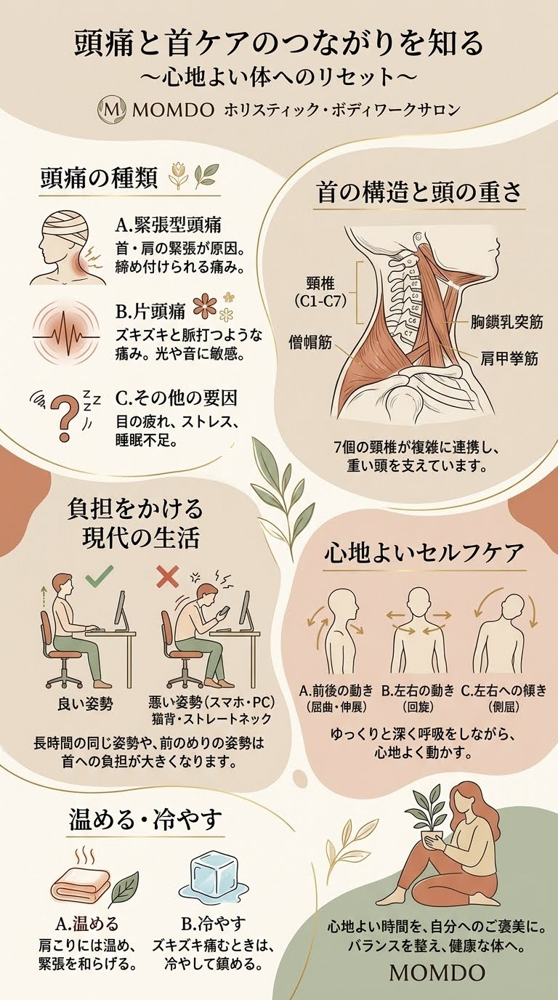

頭が締め付けられる
頭全体や後頭部が重く、圧迫されるように感じる。
頭痛にはさまざまな種類があり、背景も一つではありません。頭・首・肩・背中の状態や日々の生活も含めて、身体を多角的に見つめることを大切にします。

頭痛の感じ方や起こるタイミングは人によって異なります。まずは、どのような不調があるかを整理してみましょう。
頭全体や後頭部が重く、圧迫されるように感じる。
脈打つような痛みがあり、光や音が気になることがある。
首・肩の張りと頭痛が同じ時期に気になる。
画面を長く見たあとなどに、目の疲れや頭の重さを感じる。
長時間同じ姿勢で過ごしたあとに頭痛が気になる。
痛みが起こる頻度やきっかけが気になっている。
頭痛は大きく、ほかの病気が背景にない一次性頭痛と、別の病気や状態が原因となる二次性頭痛に分けて考えられます。
頭を締め付けられるような痛みが特徴の一つです。首や肩のこり、ストレス、睡眠など複数の要素が関係することがあります。
ズキンズキンとした痛み、吐き気、光や音への過敏などを伴うことがあります。首のこりがあっても、それだけで原因とは判断できません。
感染症、血管の病気、外傷など、別の病気が背景にある頭痛です。原因の確認と医療機関での評価が重要です。
頭部は首の上に乗り、首は肩や胸郭、背骨と連携しています。身体の状態を理解するために、関連する構造を一緒に見ていきます。
頸椎は7つの骨からなり、頭の重さを支えながら、うなずく・振り向くといった動きを可能にします。後頭部から首にかけては複数の筋肉が重なり、頭の位置を保つ働きを担っています。
首まわりの筋肉の緊張や動かしにくさが、頭痛と同時にみられる場合もあります。ただし、首のこりがすべての頭痛の原因というわけではありません。
首の構造を詳しく見る →

肩甲骨は胸郭の上を滑るように動き、鎖骨や肩関節と協調します。デスクワークなどで同じ姿勢が続くと、首や肩まわりに負担を感じることがあります。
そのため、頭痛と首・肩の不調が同時にある方では、首だけに注目せず、肩甲骨や胸郭、背中の動きも確認することがあります。
肩・肩甲骨の仕組みを見る →頭痛のきっかけや悪化要因は人それぞれです。無理のない範囲で、生活の中の変化を記録しておくと医療機関への相談にも役立ちます。
仕事やスマートフォンの使用中に、長時間同じ姿勢になっていないかを振り返ります。
睡眠時間や起床時の状態、疲労の蓄積などを記録してみましょう。
起きた日時、痛みの強さ、続いた時間、伴う症状、服薬などを記録します。
頭痛そのものを整体で診断・治療するのではなく、首や肩のこり、動かしにくさなど、身体について相談された範囲を丁寧に確認します。
いつから、どのようなときに、どんな不調があるのかを確認します。
首・肩・背中の動きや筋肉の状態などを、無理のない範囲で確認します。
必要に応じて肩甲骨や胸郭など、首と関係する部位も確認します。
確認した内容を共有し、ご希望や状態に合わせて施術内容を相談します。
頭痛の中には、早急な診察が必要なものがあります。整体やセルフケアよりも、医療機関での確認を優先してください。
突然の激しい頭痛や、麻痺・意識障害などを伴う場合は119番で救急車を呼んでください。判断に迷う場合も、医療機関や救急相談窓口に相談してください。
必ずしもそうではありません。首や肩のこりは頭痛と同時にみられることがありますが、頭痛には複数のタイプがあり、こりだけで原因を判断することはできません。
片頭痛は医療機関での診断や治療が大切です。整体は片頭痛そのものの治療を目的とするものではありません。首や肩のこりなど別の身体の悩みについては、状態を確認したうえで相談します。
痛みの強さや症状によります。いつもと違う頭痛、強い痛み、吐き気や神経症状を伴う場合は施術を控え、医療機関への相談を優先してください。
頭痛が始まった時刻、続いた時間、痛みの場所や強さ、伴う症状、服薬、睡眠や生活の変化などが参考になります。
頭痛と同時に気になる部位があれば、関連する専門ページもご覧ください。
首や肩のこり、身体の動かしにくさなどについてご相談ください。頭痛の症状や経過によっては、医療機関への受診を優先してご案内します。
電話で相談・予約 080-8106-8283お問い合わせ